Conversación Subterránea
Raiza
Explora el Wood Wide Web
una red subterránea que conecta plantas, raíces y hongos, y revela vínculos fúngicos junto al flujo químico bajo kilómetros de suelo.

iniciouna red subterránea que conecta plantas, raíces y hongos, y revela vínculos fúngicos junto al flujo químico bajo kilómetros de suelo.